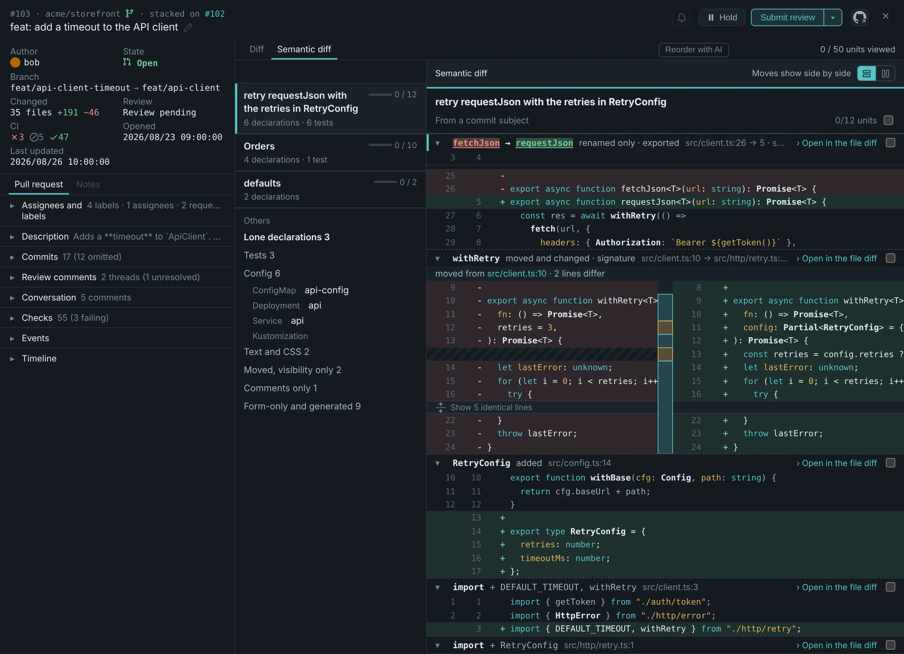
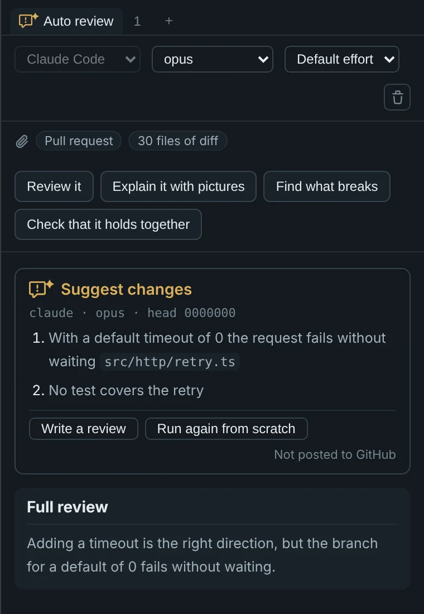

Your first review
From picking a PR to sending the review. Each step stands on its own, so skip what you don't need.
Pick a PR
The list on the left has three tabs: Review requests, My PRs and All.
Sort by priority and the list splits into Read (your review is wanted), Act (your move), Wait (on someone else) and Watch (nothing needed). Start at the top.

See where it sits in the stack
Press ⌘G to open the graph. Each stack of PRs is boxed. Hover a PR to see why it got its priority.
Click a PR to light up its chain, then Open #n to read it.

Read the diff
Tick Viewed on each file as you finish it. If the author changes that file later, Lythe clears the mark and tells you.
For a large PR, switch to Semantic diff to read by function and type, or press Reorder with AI to read in the order an AI CLI suggests. Semantic diff parses TypeScript, Rust, Go, CSS and config files without AI.

Ask an AI
The Chat pane on the right sends the PR, the diff and your comments to the CLI you pick. Start from a template such as Review it or Find what breaks. The CLI sends it to its AI service under your account.
Want a second opinion? Open another tab with a different CLI and hand it the first answer.

Comment and submit
Click the mark at the start of a line to write a comment. Comments stay as drafts until you send them.
Submit review sends them to GitHub in one go. Approve and merge from the same screen.
Let it review in the background
Turn on Auto review in Settings › Agents and prompts. While Lythe is open, PRs you are asked to review get reviewed in priority order. Each PR runs the CLI many times and uses your quota.
Results appear in the Auto review tab of Chat with a verdict. Nothing is posted to GitHub until you send it.

Teach it what you look for
Lythe keeps your review comments and Chat instructions on this Mac. Once there are 50, press Distil again in Settings › Angles and your AI CLI distils them into angles.
Angles you have not switched off go with every Chat question, so the AI checks what you usually check.
Go further
Run your own commands before and after a review
A hook is a shell command that Lythe runs for one repository at two moments: When reading starts (your first Viewed mark or Chat question on a PR) and When a review is sent from Lythe. Use it to move a GitHub Projects card to In review, post to Slack, add a label, and so on. Reviews sent on github.com do not trigger it.
The easy way is to ask the PR's Chat, for example: “When I start reading, set this PR's Status to In review.” The AI looks up the IDs and answers with a shell command. Press Register as hook above that code block, choose when it runs, try it on the open PR, then register it.
# When reading starts: set this PR's Status to "In review"
gh project item-edit --id "$LYTHE_ITEM_ID" \
--project-id PVT_xxx --field-id PVTSSF_xxx \
--single-select-option-id 47fc9ee4To write one by hand, use Add a hook in Settings › Repositories and searches. Registered hooks are listed there too, where you can edit, pause or remove them.
Lythe sets these environment variables:
LYTHE_EVENT | start or end |
LYTHE_REPO | owner/repo |
LYTHE_PR | PR number |
LYTHE_PR_URL | PR URL |
LYTHE_PR_ID | PR node id (for gh api graphql) |
LYTHE_HEAD | head commit SHA |
LYTHE_ITEM_ID | the PR's GitHub Projects item id, when it is in exactly one Project |
LYTHE_ITEMS | every project-id=item-id, one per line |
LYTHE_REVIEW | APPROVE, REQUEST_CHANGES or COMMENT (sent reviews only) |
Hooks run in your login shell from your home directory, never inside the PR's code. They stop after 60 seconds. A failing hook never blocks the review: it runs after the review is sent, and Lythe shows the exit code and the last lines of output. Success is silent.
Commands run with your own gh sign-in. Changing a Projects field needs one more permission: gh auth refresh -h github.com -s project.
Read your changes before opening a PR
Press ⌘O and pick a git repository folder. Lythe shows everything from where you branched to your working tree, untracked files included, with the same diff, Viewed marks and line comments as a PR.
When you have written comments, Hand over comments hands them to Chat, or copies them as text you can paste into the coding session that made the change. Lythe itself never edits your code.
Put a PR on hold
Waiting on the author? Press Hold in the PR header. The PR leaves its group and waits in On hold at the bottom of the list.
It comes back by itself when the author pushes or replies, or when you are re-requested or mentioned. Nothing is written to GitHub.
More from Chat
Type @ in the Chat box to attach the answer from another tab, for example to have Codex check what Claude said.
You can keep typing while the AI answers. Messages wait in a queue and go out when the answer finishes.
File locations in an answer, such as src/a.ts:42, are links. Clicking one opens that line in the diff.
The CLI's own tools (reading files, running commands, the web) follow that CLI's own settings, the same as in your terminal. Lythe's tools that write to GitHub, such as posting a review, ask you first.
Choose which PRs show up
By default the list pulls PRs you wrote, are assigned, or are asked to review, from every repository. In Settings › Repositories and searches you can add repositories (owner/repo, or just owner for everything they own) and more GitHub searches.
If your team keeps review due dates in GitHub Projects, choose the date field per repository there. PRs with a date move to the top of the list, soonest first. Reading Projects needs gh auth refresh -h github.com -s read:project.
Open a PR from a link
Replace https with lythe in any GitHub PR URL, for example lythe://github.com/owner/repo/pull/123, and the PR opens in Lythe. Extra parts such as /files are fine.
Press ⌘B for Zen: the list and Chat are put away so the diff gets the whole window. Touch the right edge to bring Chat back.
Keys worth knowing
| ⌘P | Go to a PR or file |
| ⌘⇧P | Find an action |
| ⌘G | Open or close the graph |
| ⌘F | Search inside the pane you last clicked |
| ⌘B | Zen (diff only) |
| ⌘O | Open a local folder |
| ⌘1 / ⌘2 | Jump to the list search / the Chat box |
| ⌘R | Refresh |
| ⌃Tab | Switch PRs |
| ⌥Tab | Switch Chat tabs |
| j / k | Next / previous file in the diff |
| n | Next unread file |
| v | Mark Viewed and go to the next unread |
| s | Switch between Diff and Semantic diff |
| ⌘ , | Settings (keys can be changed here) |